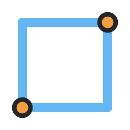
Canto a canto
Marque cantos opostos para criar uma face retangular. Ela pode servir de perfil para Extrudar, de base para uma Caixa 3P ou de face de partida para Offset.
ShapeFlow é uma tentativa de tornar a migração para o Blender mais familiar para quem vem do SketchUp ou do CorelDRAW. O projeto adapta alguns fluxos de desenho 2D e modelagem direta usando os recursos do Blender, para ajudar você a começar a criar enquanto se familiariza com uma ferramenta open source. Os recursos listados na seção Ferramentas estão disponíveis para uso, mas não há garantia de funcionamento perfeito em todos os casos. A adaptação não cobre necessariamente todos os recursos das ferramentas de referência e algumas funções podem se comportar de outro modo. O que foi desenvolvido reflete as necessidades identificadas até aqui. Talvez você precise de algo que ainda não esteja no ShapeFlow. Entre em contato por e-mail ou abra uma issue no GitHub. Com seu retorno, podemos avaliar a necessidade e pensar em como resolver.
Se a ferramenta ajuda no seu trabalho, você pode contribuir voluntariamente para o projeto.
Escaneie o QR Code com o aplicativo do seu banco e confira os dados do recebedor antes de concluir.
gabriel3d.com@gmail.comRecebedor: Gabriel de Jesus Santos · Nu Pagamentos (Nubank)
Doação voluntária. O valor fica a seu critério no aplicativo bancário.
Dúvidas, sugestões ou relato de erro? Entre em contato por e-mail ou abra uma issue no GitHub.
Explore os recursos disponíveis e veja os tutoriais para acompanhar cada fluxo.
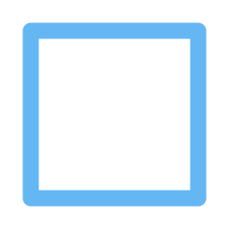

Marque cantos opostos para criar uma face retangular. Ela pode servir de perfil para Extrudar, de base para uma Caixa 3P ou de face de partida para Offset.
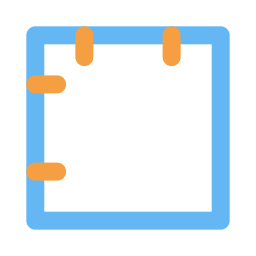
Defina um quadrado de lados iguais como perfil limpo para Extrudar, recortar ou combinar com outros sólidos.
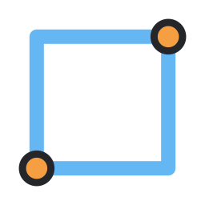
Marque um canto, indique a largura e depois a altura. O perfil resultante pode ser extrudado ou usado como base de um volume.
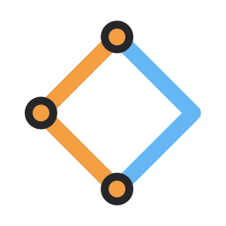
O primeiro ponto fixa o canto; o segundo orienta o lado; o terceiro define a largura perpendicular e fecha o ângulo reto. Use o perfil em Extrudar ou em operações com sólidos.
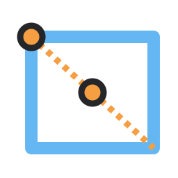
Comece pelo centro e expanda lados opostos de forma simétrica. É útil para perfis centralizados que depois podem ser extrudados ou espelhados.
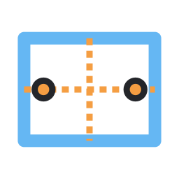
Mantém a expansão simétrica em torno do centro ao definir o retângulo por dois pontos. Este modo está em estudo.
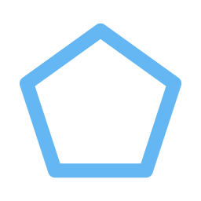
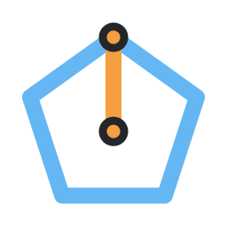
O raio vai do centro a um vértice e define a orientação do polígono regular. Ajuste o número de lados e use o contorno como perfil para Extrudar.
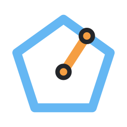
O raio termina no ponto médio de uma aresta, mantendo o polígono regular com um lado orientado pela medida. Depois, Extrudar transforma o perfil em prisma.
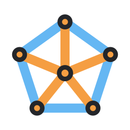
Posicione os vértices um a um e pressione Enter para fechar o perfil. O contorno personalizado pode ser extrudado ou aproveitado em operações de sólidos.
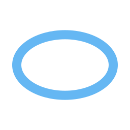
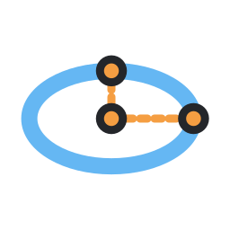
Defina o centro, a largura e a altura em etapas independentes. O perfil fechado pode ser extrudado; com proporção igual, resulta em um círculo.
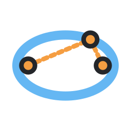
Marque os dois focos e um ponto da curva para determinar a elipse. Use-a como perfil de Extrudar ou como seção de uma varredura Follow Me.
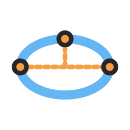
Os dois primeiros pontos fixam o eixo maior; o terceiro determina a altura perpendicular. A elipse fechada está pronta para Extrudar ou para compor um perfil.
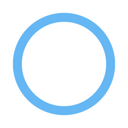
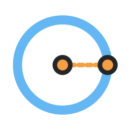
Marque o centro e o raio. O círculo pode virar furo ou cilindro com Extrudar, ou funcionar como perfil na varredura Follow Me.
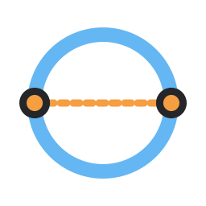
Marque as extremidades do diâmetro para definir centro e raio de uma só vez; depois, use a face circular em Extrudar ou Boolean.
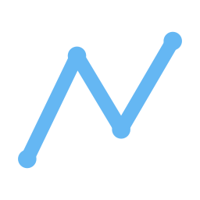
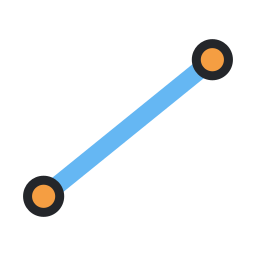
Crie um segmento com dois pontos para guias, arestas de perfil e caminhos. Combine linhas com curvas ou use-as no modo Embedded para dividir uma face receptora.
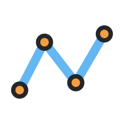
Construa um caminho Poly ponto a ponto. Ele pode ser aparado, estendido ou usado como trajeto da varredura Follow Me com um perfil selecionado.
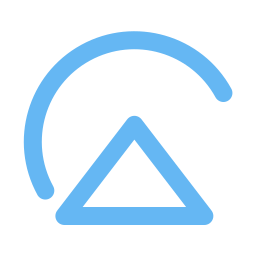
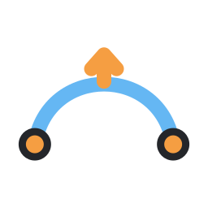
Marque as duas extremidades e um ponto que controla a curvatura. O arco pode formar parte de um perfil fechado ou de uma face Embedded.
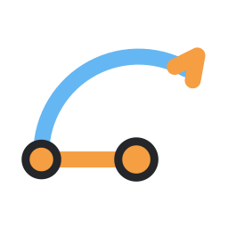
Defina centro, raio e abertura angular para controlar a posição e o comprimento do arco; conecte-o a outros segmentos para formar um perfil.
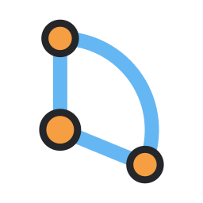
Defina um setor circular preenchido, útil como perfil de peça ou recorte; Extrudar converte a face em um sólido setorial.
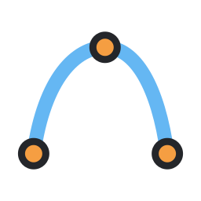
Os dois primeiros pontos definem a corda e o terceiro determina a passagem do arco. Combine vários arcos e segmentos para desenhar um contorno fechado.
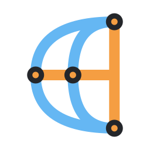
Marque as extremidades da corda e indique a curvatura que fecha a forma com dois arcos. A lua resultante é um perfil fechado pronto para Extrudar.
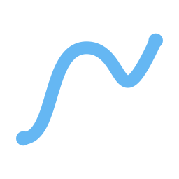
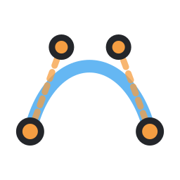
Construa uma curva Bézier nativa por nós e alças para controlar tangentes e suavidade. Use-a como caminho no Follow Me ou apare/estenda quando for uma Poly Curve compatível.
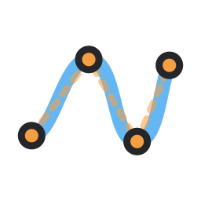
Distribua pontos de controle para criar uma NURBS nativa e suave. A curva pode compor caminhos de modelagem ou ser usada como trajeto de Follow Me.
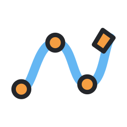
Clique para inserir nós e formar um caminho Bézier com alças automáticas. Depois, selecione um perfil para varrê-lo pelo caminho com Follow Me.
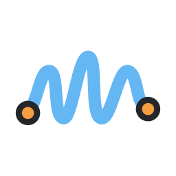
Desenhe arrastando para registrar um caminho Poly editável. Ele pode guiar uma varredura Follow Me ou ser ajustado com Aparar e Estender.
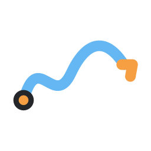
Desenhe à mão livre e receba uma curva Bézier suavizada. Use-a como caminho de varredura; o nível de suavização é ajustável no painel.
Arraste um traço: linhas e círculos são reconhecidos, enquanto formas livres viram curvas suavizadas. Use o resultado como perfil ou caminho em outras operações.
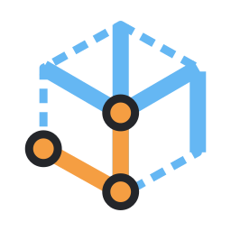
Defina largura, direção da base e profundidade em três etapas para criar uma caixa 3D. Combine volumes com União, Subtração, Interseção ou Extrudar faces depois.
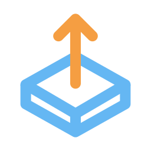
Aplique profundidade a perfis e faces para construir ou editar volumes. Depois, combine o resultado com União, Subtração ou Interseção para compor formas mais complexas.
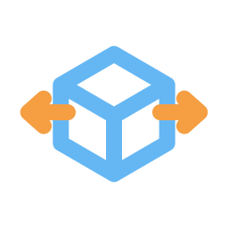
Reposicione peças e componentes para preparar encaixes, alinhar um conjunto ou ajustar a forma entre operações de modelagem.
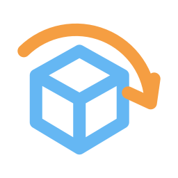
Reoriente peças depois de desenhá-las ou extrudá-las. Em conjunto com Mover e Espelhar, ajuda a posicionar componentes em diferentes lados do modelo.
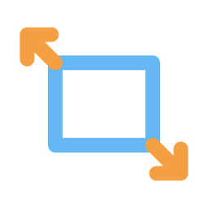
Redimensione uma peça antes de combiná-la com outros sólidos ou distribuir cópias em uma série.
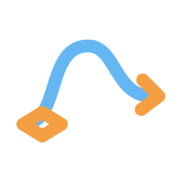
Combine uma curva de caminho com um perfil selecionado para criar tubos, molduras e formas que acompanham um trajeto.
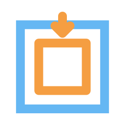
Desloque a borda da face para dentro e forme um contorno interno. O resultado pode ser extrudado para criar uma cavidade ou detalhe rebaixado.
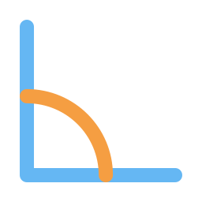
Aplique arredondamento com largura controlada, útil para suavizar arestas depois de Extrudar, Boolean ou modelagem de caixa.
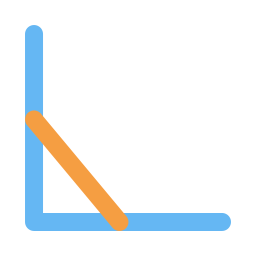
Substitua uma aresta por um corte plano de um segmento. Combine com arredondamentos seletivos para controlar a transição entre faces.
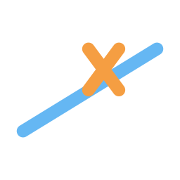
Corte uma curva Poly na curva limite selecionada. Reaproveite o trecho em um contorno ou como parte de um caminho de modelagem.
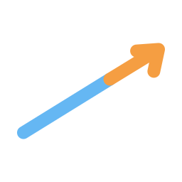
Leve a curva Poly até a curva limite para completar um contorno ou ajustar um caminho existente.
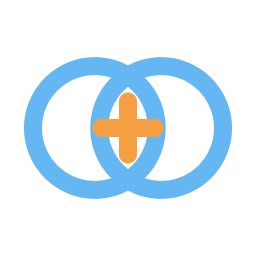
Una o objeto ativo ao sólido selecionado usando Boolean. Use caixas, extrusões ou perfis convertidos em sólidos para construir volumes compostos.
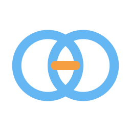
Use o sólido selecionado como cortador do objeto ativo para abrir furos, encaixes ou rebaixos; os resultados usam Boolean nativo do Blender.
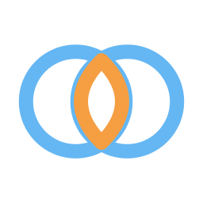
Preserve apenas a região sobreposta entre o objeto ativo e o sólido selecionado, útil para recortar uma forma pela interseção de volumes.
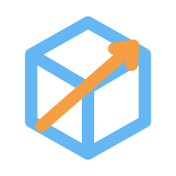
Use outro sólido como cortador e mantenha o resultado como operação Boolean não destrutiva para poder revisar a forma depois.
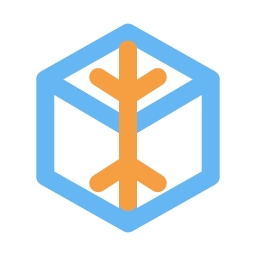
Divida o alvo pelo volume cortador e gere os resultados interno e externo como objetos separados para continuar a modelagem em cada parte.
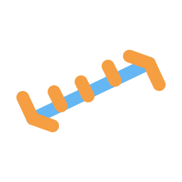
Confira distâncias entre pontos do modelo; use a leitura junto às cotas para documentar medidas e relações entre peças.
Confira o ângulo entre duas direções e use a leitura ao ajustar encontros entre peças ou documentar um desenho.
Marque os pontos de referência para registrar uma medida editável na cena e completar a documentação do modelo.
Use uma face existente como referência e desenhe formas alinhadas a superfícies inclinadas, sem ficar limitado aos planos globais.
Defina de onde começam as construções; o ponto também pode servir de referência para posicionamento e cópias radiais.
Mantenha desenhos e transformações relacionados à geometria existente para facilitar encaixes e encontros entre peças.
Informe valores exatos durante operações compatíveis para repetir distâncias e dimensões sem depender só do arrasto do mouse.
Agrupe objetos selecionados sob um Empty para mover e organizar conjuntos sem unir suas malhas. O grupo pode continuar recebendo componentes e cópias vinculadas.
Crie uma instância vinculada para reutilizar a mesma malha em várias posições; torne a instância ativa única quando precisar editar sua geometria separadamente.
Repita o objeto em uma linha com espaçamento constante ou em torno do cursor com ângulo por cópia. Quantidade e eixo controlam a distribuição.
Crie uma cópia espelhada por eixo local X, Y ou Z usando o modificador Mirror; combine com Copy Series e Boolean para montar conjuntos simétricos.
Inspecione a malha ativa e veja um resumo de fronteiras abertas, regiões não manifold, elementos soltos ou duplicados, faces degeneradas e orientação global invertida.
Uma leitura dos campos, opções e atalhos que aparecem ao lado das ferramentas no painel N → ShapeFlow. Os botões de ferramentas com ícones estão explicados na seção anterior.
Fluxos ilustrados com os ícones das ferramentas. Abra um tópico para ver a sequência e os passos.
Crie um perfil de lados iguais para usar como face, base ou volume.
Para definir largura e altura separadamente, use Retângulo por dois pontos.
Há dois caminhos para criar o bloco: definir suas três dimensões com a Caixa 3P ou extrudar uma face quadrada.
Como alternativa, desenhe um quadrado e use Push/Pull na face para definir a altura.
A opção Incremental controla os passos de medida. Ela é independente da grade visual do Blender.
W captura a orientação da face sob o cursor. Não é um comando de seleção de face.
Esse fluxo divide a malha de uma face. Interseção calcula o volume comum entre dois sólidos e é uma operação diferente.
Para usar uma face inclinada como referência, capture o plano dela com W antes de iniciar a rotação.
Interseção mantém apenas o volume comum. Solid Split gera resultados complementares dentro e fora do cortador.
Use União para combinar os volumes sobrepostos sem abrir um furo.
Arredondar cria uma transição curva. Chanfrar cria uma transição plana.
A ferramenta espera o caminho Curve ativo e um perfil selecionado.
A série linear usa um modificador Array. A série radial cria instâncias vinculadas.
As unidades numéricas seguem a opção Unit em Numeric input.
Antes de instalar, baixe o ShapeFlow.
No Blender: Edit → Preferences → Add-ons → Install from Disk. Selecione o ZIP.
Ative o ShapeFlow. Use T para as ferramentas ou N → ShapeFlow para as operações.
Os recursos apresentados no catálogo estão disponíveis, mas não há garantia de funcionamento perfeito em todas as situações. O ShapeFlow continua em desenvolvimento e os fluxos podem diferir das ferramentas que serviram de referência.